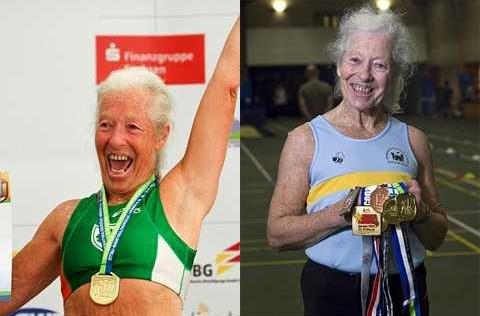
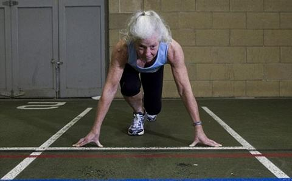

Historias de campeones: articulaciones sanas a cualquier edad
Hoy nos reunimos con la campeona de atletismo María Vasco, de 76 años. Cada año lleva ventaja sobre las atletas jóvenes y todavía gana competiciones internacionales, al mismo tiempo que se mantiene fuerte y sana. María sabe, mejor que nadie, que puedes practicar deporte profesionalmente a cualquier edad.
María, por favor, ¿nos podrías contar cómo entraste en el mundo del deporte profesional?
Sabes, soñaba con ser una campeona desde que era niña. El estereotipo era que debes empezar a entrenarte desde muy pequeña, para estirar y calentar bien. Este sueño permaneció en mí muchos años. Y tan sólo cuando fui más adulta, decidí finalmente intentarlo.
¿Y cómo lo lograste?
Bueno, siempre había controlado lo que comía y bebía. Nunca he fumado ni consumido alcohol. Solía caminar mucho. A pesar de ello, cuando tenía unos 66 años empecé a tener problemas de articulaciones. Sin embargo, decidí seguirme preparando para competiciones. Mi marido me apoyó y me ayudó a estar preparada para grandes deportes, no solamente algunas maratones para aficionados.
Cinco años después, decidí participar en competiciones y gané mis primeras medallas. Y me gustó mucho. A pesar del hecho de que podía saltar y correr como una mujer joven, mi cuerpo me seguía diciendo “María, que te estás haciendo mayor”.
Mis rodillas empezaron a agrietarse y crujir cuando movía las piernas y hacía los ejercicios. No podía subir las escaleras sin pararme a descansar un poco.
Pero no dejaste el deporte y seguiste ganando, ¿verdad?
No, no lo dejé. Sabes que el deporte implica traumas. Un verdadero ganador hace lo que sea, superando el dolor y acostumbrándose a él. Es la otra cara de la moneda de la victoria.
Constantemente estaba intentando encontrar algo que pudiera ayudarme. Por supuesto, intenté tomar más calcio y vitaminas, pero no era suficiente para aliviar el dolor. Creo que sabes lo dañinos que son todos esos analgésicos para el estómago. Empecé a utilizar , pidiéndolo en la tienda oficial.
¿Qué es? ¿Un medicamento potente?
No, no lo es. Intento no dañarme a mí misma. Es una crema completamente natural. Antes de empezar a utilizarla, examiné cuidadosamente su contenido. Contiene alcanfor, castaño, eucalipto, menta y aceite de abeto. Conocemos todos estos componentes desde que éramos unos niños. ¡Pero no te creerás lo efectivos que son cuando los mezclas! Eliminan el dolor agudo, la inflamación y la hinchazón. Incluso ayudan a recuperar las articulaciones dañadas.
Es difícil de creer que un medicamento a base de vegetales sea capaz de proporcionar tal efecto.
Bueno, yo me lo creí al instante. Lo único que realmente necesita nuestro cuerpo ya está presente en la naturaleza, ¡sólo tenemos que usarlo!
Por cierto, ¿cómo lo utilizas?
Me aplico la crema dos veces al día. Se absorbe rápidamente y no se pega en la ropa. Mantengo mi cuerpo seco durante aproximadamente una hora tras su uso.